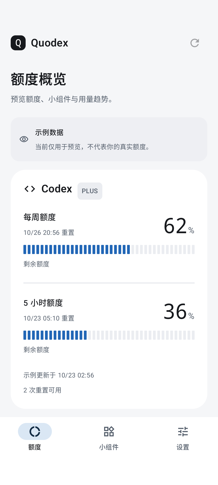

额度与重置时间
查看账号返回的额度周期、已用或剩余百分比，以及下一次重置时间。不同账号可用的额度窗口可能不同。
FOR ANDROID · OPEN SOURCE
把 Codex 的剩余额度与重置时间，
放在抬眼就能看见的地方。
Android 10 及以上 · 免费开源 · 当前为实验性预发布


真实组件截图 · 画面为示例数据
SMALL APP. CLEAR PICTURE.
从当前额度到每天的 token 用量，
了解使用节奏，安排接下来的工作。
查看账号返回的额度周期、已用或剩余百分比，以及下一次重置时间。不同账号可用的额度窗口可能不同。
标准与 2×1 紧凑小组件，支持浅色和深色主题。查看最新状态，轻点刷新，或直接打开应用。
在应用中切换近 7 天与 30 天趋势，查看逐日用量、累计总量和峰值。缺失的数据会明确标注。
后台定期检查新版本，发现可用更新后通知你。点击打开 GitHub 下载页，由你决定何时安装。

BUILT FOR YOUR DAILY FLOW
显示最后更新时间，刷新失败时保留上次数据。已知多少，就展示多少。
凭据保留在设备上
账号凭据在本机加密保存，额度请求直接连接服务端。
按真实数据呈现
Token 统计可能延迟，兼容接口仍处于实验阶段；不根据额度百分比估算 token 或费用。
截图采用示例数据，不代表实际账号权益。
READY WHEN YOU ARE
下载 APK → 安装并连接账号 → 添加桌面小组件。
通过 GitHub Releases 分发。安装时请核对来源；系统可能需要允许浏览器安装 APK。尚未上架 Google Play。
Quodex 是独立的第三方开源工具，与 OpenAI 无隶属关系。Codex 名称用于说明所连接的服务。
可以手动刷新，也支持后台周期同步。实际运行时间受 Android 调度、网络与省电策略影响；token 统计可能存在服务端延迟。